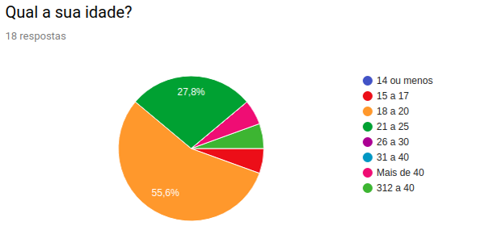
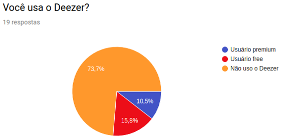
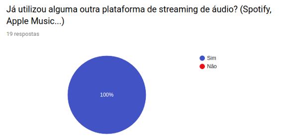
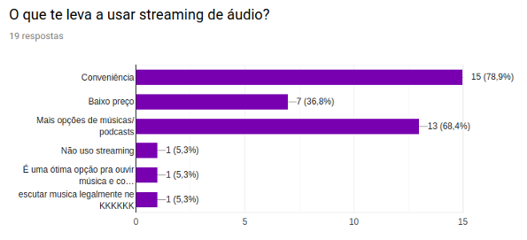
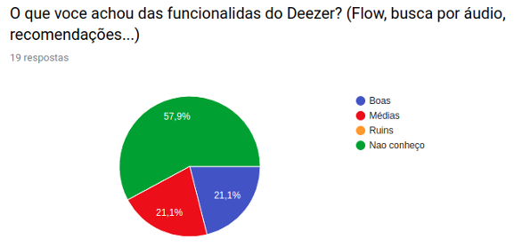
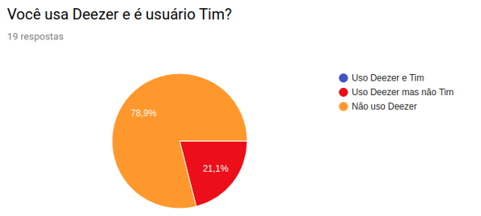

Questionário
O questionário é uma técnica com intuito de compreender o público-alvo e os diversos tipos de usuários que utilizam a aplicação. A fim de levantar mais requisitos que públicos específicos utilizam.
Para a preparação do questionário, levamos em consideração usuários e não usuários da aplicação. Para usuários, nossos principais interesses foram a interface, se intuitiva ou não e opinões sobre as principais funcionalidades do Deezer.
| Número | Versão |
|---|---|
| Versão 1 | Questionário 1 (Versão abaixo) (12/09/2019) |
| Versão 1.1 | Questionário 1.1 (19/09/2019) |
Resultado
Data de realização: 05/09/2019 - 12/09/2019.
Reunião remota.
Idade

Com as respostas que obtivemos, podemos visualizar nosso público alvo. A sua grande maioria possui entre 18 e 20 anos, mas há também uma quantidade significativa de usuários entre 21 a 25. Essas taxas combinadas, somam mais de 80% do nosso público.
Usuários


Com as repostas que obtivemos, podemos visualizar o alcance do nosso aplicativo. A grande maioria não utiliza o Deezer, porém utilizam outras plataformas de streaming de áudio.
Motivações

Analisamos também as motivações que levaram nosso público alvo a usar plataformas de streaming de áudio. A grande maioria afirma ser pela conveniência e a por possuir uma variedade de conteúdo.
O Deezer
Experiência

Analisamos a experiência do usuário com a plataforma do Deezer. Por muitos não utilizarem o aplicativo, obtivemos poucas respostas relevantes. Em geral, usuários do Deezer tiveram uma boa experiência com a plataforma.
Interface

Usuários do Deezer, em sua maioria, acham a interface intuitiva, porém, há aqueles que a acharam pouco intuitiva.
Funcionalidades

Usuários do Deezer consideram suas funcionalidades, como o Flow, Busca por áudio, entre outros, de medianas para boas.
Usuários Tim

O Deezer possui uma parceria com a Tim, em que usuários da Tim podem ser usuários do Deezer Premium gratuitamente. Por curiosidade, perguntamos ao nosso público se eles são usuários Tim. Vimos que em nossa amostra, não houve o caso de um usuário Tim ser usuário do Deezer.
Resultado
| Nº | Requisito |
|---|---|
| 9 | O usuário deve poder escutar um conteúdo. |
| 12 | O usuário deve poder criar seu Flow. |
| 60 | O Usuário free deve poder experimentar o Deezer Premium por um tempo determinado. |
| 66 | O Usuário premium deve pagar uma mensalidade. |
| 8 | O sistema recomenda músicas, Playlists, Estações de rádio para o usuário, dependendo do seu gosto. |
| 30 | O sistema deve recomendar conteúdo de acordo com a atividade do usuário. |